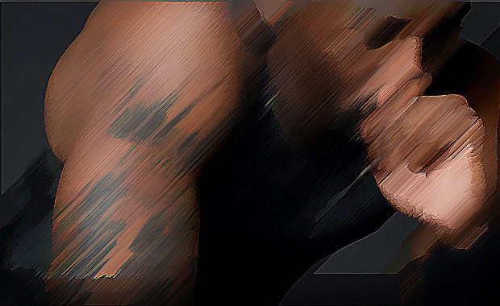

Nam eget dui. Nunc egestas, augue at pellentesque laoreet, felis eros vehicula leo, at malesuada velit leo quis pede. Vivamus aliquet elit ac nisl.In hac habitasse platea dictumst. In consectetuer turpis ut velit. Aliquam lobortis. Aliquam lobortis. Nullam cursus lacinia erat.
The new offer is for a reported $6.7 million from Italian team Virtus Bologna, which begins its season Oct. 9 and would have to come up with a huge insurance policy to land Bryant, not to mention the actual cash to get the 13-time all-star to play on the perennially underachieving team.
Bryant, 33, is under contract with the Lakers for three more years and $83.5 million. He has several contract options from the Italian team, according to its general manager, including a shorter per-game deal that would work out to about $740,000 a game. All options are non-binding, allowing Bryant to return to the Lakers if the NBA lockout ends.
"I think the fact that he's lived in Italy makes this appealing to him," Virtus Bologna executive Massimo Faraoni told the Associated Press. Bryant's father, Joe, played professionally in Italy when the Lakers star was younger. Virtus Bologna hasn't won its league since 2001.
Even if Bryant doesn't take the offer seriously, he continues to be a man in motion since having a non-invasive procedure on his bothersome right knee in Germany three months ago.
He made promotional appearances this summer in the Philippines, China and Singapore, scored 43 points in a pro-am game in Los Angeles, played in a celebrity soccer game in Washington, talked briefly with teams in Turkey and China about playing pro basketball there, and was headed to Europe for more paid appearances next week.